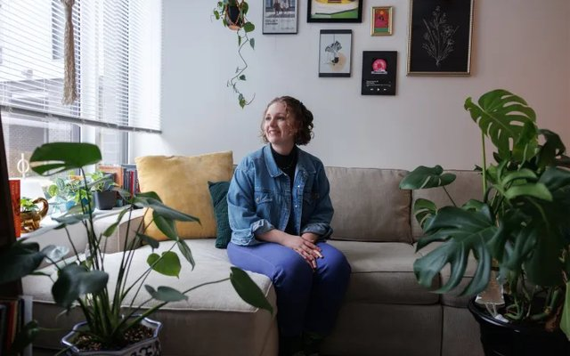
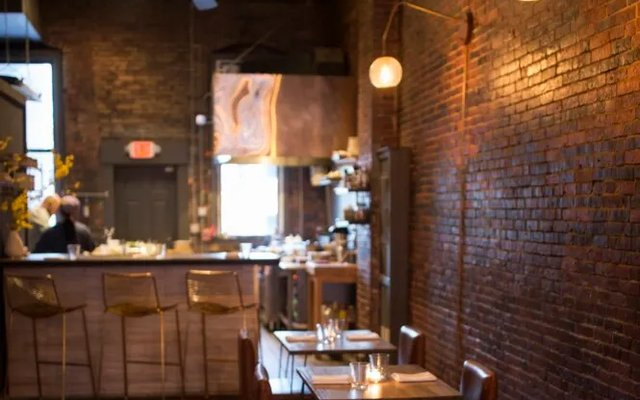
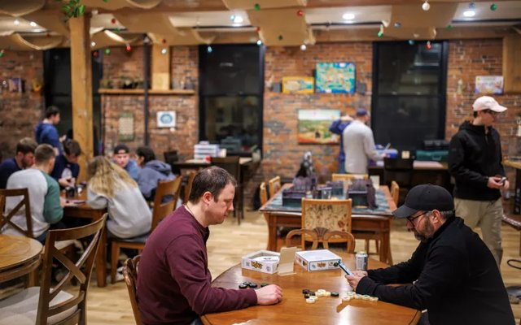
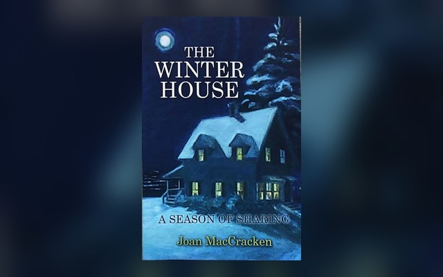
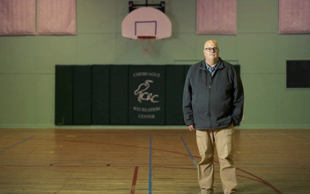
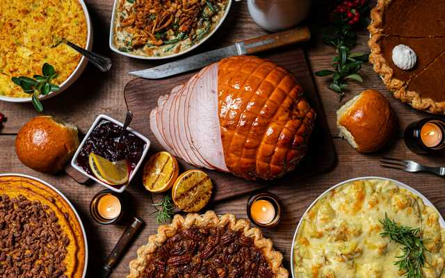
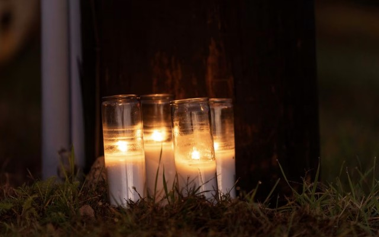
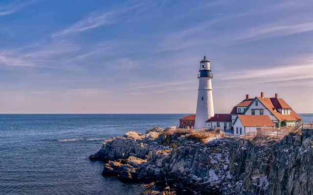
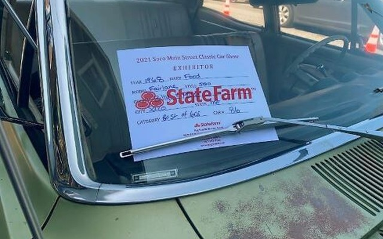

Arizona Highways — Nov 2025
Everyday Arizona: Red Rocks
A personal essay on encountering Arizona's high desert for the first time, and what the landscape surfaced about starting over somewhere new.
Read Story →Lighter in tone, still reported with care — features, guides and essays written for Maine and Arizona audiences.
A personal essay on encountering Arizona's high desert for the first time, and what the landscape surfaced about starting over somewhere new.
Read Story →A roundup of where to find the best happy hour deals on food and drinks across Southern Maine.
Read Story →A tour of Maine's historic covered bridges — and a few newer builds carrying the tradition forward.
Read Story →A University of New England student charts her ideal Maine day — gem digging, a walk along the Eastern Trail, brunch at The Front Room and dancing in Old Orchard Beach.
Read Story →
Why millennial and Gen Z plant parents keep filling their apartments with greenery, long after the pandemic houseplant boom was supposed to fade.
Read Story →
The fine-dining restaurant credited with kickstarting Biddeford's food scene is relocating to Portland — a look at what the move means for both cities.
Read Story →
Board games, trivia and arcade nights are reshaping what a night out at a Maine bar looks like.
Read Story →From prix-fixe meals and buffets to Chinese takeout and bagels, several Maine restaurants will be open Monday and ready to feed you.
Read Story →
Our state provides the snowy backdrop for holiday romances, murder mysteries, children's stories and more.
Read Story →A guide to where Portland night owls can still find a hot meal after the kitchens at most restaurants have closed for the evening.
Read Story →
Chebeague Island's Steve Auffant — rec center director, volunteer firefighter and animal control officer — is among the Mainers honored this year for going above and beyond for his community.
Read Story →
Prix fixe dinners, buffets and takeout meals are available from Biddeford to Bangor.
Read Story →
Students gathered on UNE's Commons Lawn a week after the Lewiston mass shooting, reading aloud the names of all 18 victims and lighting candles in their memory.
Read Story →Robert Card, accused of killing 18 people and injuring 13 in the Oct. 25 attack, was found dead of an apparent self-inflicted gunshot wound two days later, ending a tense, days-long manhunt across Lewiston and surrounding towns.
Read Story →As surrounding towns, schools, and other Maine colleges closed amid a shelter-in-place order and ongoing manhunt, UNE resumed classes as normal, a decision that drew sharply divided reactions from students, faculty, and local officials.
Read Story →The Rockland-based organization received a $86,988 grant from the USDA and plans to use the money to support small businesses located on Maine’s island or coastal towns.
Read Story →The Maine Real Estate & Development Association also will introduce new presentation options when it holds its annual forecast conference on Feb. 29.
Read Story →How a part-time Biddeford resident's photograph of Ruth Bader Ginsburg ended up as the design for a new postage stamp.
Read Story →
A field guide to every lighthouse dotting the Maine coastline, from the easiest day trips to the most remote.
Read Story →After 35 years at UNE, Research and Teaching Librarian Barbara Swartzlander is retiring, leaving behind a legacy of mentorship, campus milestones, and decades of relationships with students and colleagues.
Read Story →As ChatGPT and other AI tools spread through college classrooms, UNE faculty and students weighed in on where artificial intelligence helps learning, where it threatens academic integrity, and how the university's policies are adapting.
Read Story →
Vintage automobiles lined Main Street as the Saco Main Street Classic Car Show returned for another year of classic rides on display downtown.
Read Story →Biddeford and Saco organizers launched a local SURJ chapter after a June protest, drawing more than 90 members committed to education and what they call "steady progress" toward dismantling systemic racism.
Read Story →